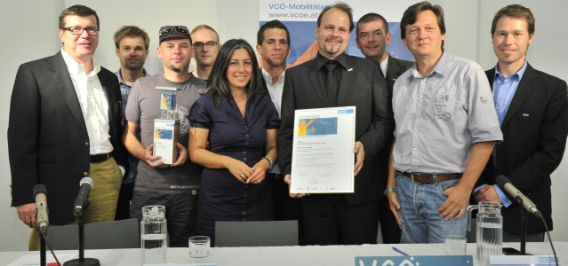

dokumentieren 🎓²
- Digitaler Dokumentenverkehr: Spaß oder Stress?
Dokumentenverkehr Versenden Sie Dokumente an jeden möglichen Empfänger. Die Anwaltssoftware AnNoText unterstützt alle relevanten Kanäle, wie E-Mail, elektronisches Fax,EGVP, GDV oder zukünftig beA). - annotext kernfunktionen detail | Wolters Kluwer
Der juristisch bedeutsame elektronische Dokumentenverkehr (JBED) lässt die elektronischen Dokumente, die absolut rechtskräftig sind und als Urschriften gelten, schnell vereinbaren, sicher austauschen und aufbewahren und somit deren Authentizität und Integrität gewährleisten. Der JBED befähigt die juristischen und physischen Personen, jede Anzahl von verschiedenartigen Dokumenten ... - Dokumentenverkehr - Englisch-Übersetzung – Linguee Wörterbuch
Echtzeit-Überblick: Sie haben den Live-Überblick über Ihren elektronischen Dokumentenverkehr. Mit Absender, Datum, Uhrzeit und Status. Die Dokumente werden 90 Tage gespeichert. - dokumentieren 🎓²
Immer mehr Unternehmen setzen auf die Digitalisierung von Dokumenten, um über den Wegfall der klassischen Papierablage ihre Workflows effizienter zu gestalten. Im Dokumentenverkehr tritt a n die Stelle des traditionellen Posteingangs-oder Postausgangs-Stempel dann – in vielen Fällen zwingend – der digitale Zeitstemp e l (Time Stamp). - AnNoText | Forderungsmanagement für Kanzleien | Wolters ...
Viele übersetzte Beispielsätze mit "Dokumentenverkehr" – Englisch-Deutsch Wörterbuch und Suchmaschine für Millionen von Englisch-Übersetzungen. - Zeitstempel - Qualified Time Stamp Service - eezeeTSP
Dokumentenverkehr. Nachrichten, Analysen und Multimedia: Mehr lesen Sie auf Sputnik Deutschland - Rechtsgültiger Dokumentenverkehr - SX-DMS
TISLOG Logistiksoftware für Transport und Lager bietet Ihnen überall dort, wo Warenflüsse überwacht und gesteuert werden müssen, eine leistungsfähige und flexible Lösung. Telematik und mobiles Auftragsmanagement mit System: Mit unserer mobilen Logistiksoftware werden Ihre Fahrer ganz einfach in Ihre IT-Infrastruktur eingebunden. TISLOG integriert sämtliche logistischen Prozesse, von ... - TISLOG Logistiksoftware für Transport und Lager | TIS GmbH
Rechtgültiges Dokument ist ein Dokument, das als Bestätigung der geschäftlichen bzw. sonstigen Tätigkeit verwendet wird, dessen Inhalt zweifelfrei als authentisch anerkannt wird. Die Echtheit der rechtsgültigen Dokumente wird durch elektronische Unterschriften und Siegel beglaubigt. Der rechtsgültige elektronische Dokumentenverkehr ist das ganzheitliche System, das ermöglicht, die ... - Dokumentenverkehr - Sputnik Deutschland
Der Projekttransport in der Welt der Logistik ist eine mit Stern markierte Aufgabe. Sie erfordert nicht nur die vollständige Einbeziehung in den Transportprozess selbst, sondern auch ein Verständnis der Engineering-, wirtschaftlichen und manchmal auch politischen Besonderheiten des Projekts. Heute wollen wir mit Andrey Abramov, dem stellvertretenden Leiter der Abteilung Industrial Project ... - Dokumentenmanagementsystem Test | FOCUS.de
Sicherheitsmerkmale. Außer einem Wasserzeichen, gibt es weitere Optionen, um Papiere mit der nötigen Sicherheit auszustatten. Je nach Verwendungszweck bieten wir passende und preiswerte Sicherheitsmerkmale an. Informieren Sie sich, welcher Sicherheitsdruck für Ihre Drucksachen empfehlenswert ist.

academic2.ru RU EN DE FR ES Запомнить сайт Deutsch-Russisch Wörterbuch für Finanzen und Wirtschaft Толкования Переводы Книги
Deutsch-Russisch Wörterbuch für Finanzen und Wirtschaft
dokumentieren
«dokumentieren» в словарях и энциклопедиях | перевод «dokumentieren»документировать, обосновывать документами, подтверждать документами
Deutsch-Russisch Wörterbuch für Finanzen und Wirtschaft . J. I. Kukolew . 2001 .
Dokumentenverkehr DollarСмотреть что такое "dokumentieren" в других словарях:
dokumentieren — V. (Mittelstufe) etw. durch Dokumente belegen Beispiel: Kannst du deinen Anspruch auf das Erbe dokumentieren? Kollokation: etw. historisch dokumentieren … Extremes Deutsch
dokumentieren — schriftlich festhalten; niederschreiben; aufschreiben * * * do|ku|men|tie|ren [dokumɛn ti:rən]: 1. tr.; hat durch Urkunden, Dokumente, Beweisstücke o. Ä. belegen: eine Sendung durch Aktenauszüge, Fotos dokumentieren; etwas filmisch … Universal-Lexikon
dokumentieren — 1. aufzeigen, ausdrücken, demonstrieren, erkennen lassen, zeigen, zum Ausdruck bringen; (geh.): bekunden, dartun, kundtun; (bildungsspr.): artikulieren, manifestieren. 2. a) ausweisen, belegen, beurkunden, beweisen, den Nachweis … Das Wörterbuch der Synonyme
dokumentieren — do·ku·men·tie·ren; dokumentierte, hat dokumentiert; geschr; [Vt] 1 etwas dokumentieren etwas (meist eine Meinung, Haltung) deutlich zeigen ≈ bekunden, beweisen: seinen guten Willen durch Taten dokumentieren; [Vr] 2 etwas dokumentiert sich in … Langenscheidt Großwörterbuch Deutsch als Fremdsprache
dokumentieren — Dokument »Urkunde, Schriftstück; Beweis«: Das Substantiv wurde im 16. Jh. aus lat. documentum »Beweis« (zu lat. docere »‹be›lehren«; vgl. ↑ dozieren) in dessen mlat. Bedeutung »beweisende Urkunde« entlehnt. Die eigentliche Bedeutung von lat. … Das Herkunftswörterbuch
dokumentieren — (lat. ▷ franz.) zeigen, belegen Beobachtungen dokumentieren … Das Grundschulwörterbuch Fremde Wörter
dokumentieren — do|ku|men|tie|ren 〈V.〉 1. durch Dokumente belegen, beweisen 2. beurkunden … Lexikalische Deutsches Wörterbuch
dokumentieren — do|ku|men|tie|ren zu ↑...ieren : 1. zeigen. 2. [durch Dokumente] beweisen; beurkunden … Das große Fremdwörterbuch
dokumentieren — do|ku|men|tie|ren (zeigen; beweisen) … Die deutsche Rechtschreibung
informieren, dokumentieren, archivieren — Logo des Verbandes i.d.a. (informieren, dokumentieren, archivieren) ist der Dachverband deutschsprachiger Frauen/Lesbenarchive, bibliotheken und dokumentationsstellen. i.d.a. existiert als Verband mit Sitz in Bonn seit 1994 und umfasst … Deutsch Wikipedia
dok. — dokumentieren; dokumentiert EN to document; documented … Abkürzungen und Akronyme in der deutschsprachigen Presse Gebrauchtwagen
Книги
Software-Projektmanagement und -Qualitatssicherung , Helmut Sandmayr , Jochen Ludewig , Karol Frühauf , Книга "Software-Projektmanagement und -Qualitätssicherung".Meilensteine sind Entscheidungspunkte im Projekt. Sie haben finanzielle Konsequenzen, entweder in Form von Zahlungen Категория: Научная литература Подробнее Купить за 6689 руб Ernahrungstagebuch - Das Symptom- & Allergietagebuch zum Ausfullen , Leni Lopa , Книга "Ernährungstagebuch - Das Symptom- & Allergietagebuch zum Ausfüllen".Ernährungstagebuch und Symptomtagebuch (auch als Allergietagebuch geeignet) Essensgewohnheiten dokumentieren Категория: Книги Подробнее Купить за 1527 руб Meine Modellschiffe - Schiff Modelle bauen und sammeln - Sammelbuch/Notizbuch , Renate Sültz , Uwe H. Sültz , Sammeln ist Leidenschaft!Besonders stolz sind wir, wenn ein Modell selbst gebaut wurde. Manchmal dauert es Jahre, bis ein Schiff fertig gestellt ist. Um bei Treffen seine Modelle zu zeigen Категория: Дом и хобби Подробнее Купить за 914 руб Другие книги по запросу «dokumentieren» > >Пометить текст и поделиться Искать во всех словарях Искать в переводах Искать в Интернете
Поделиться ссылкой на выделенное
Прямая ссылка:
… Нажмите правой клавишей мыши и выберите «Копировать ссылку»We are using cookies for the best presentation of our site. Continuing to use this site, you agree with this. OK
